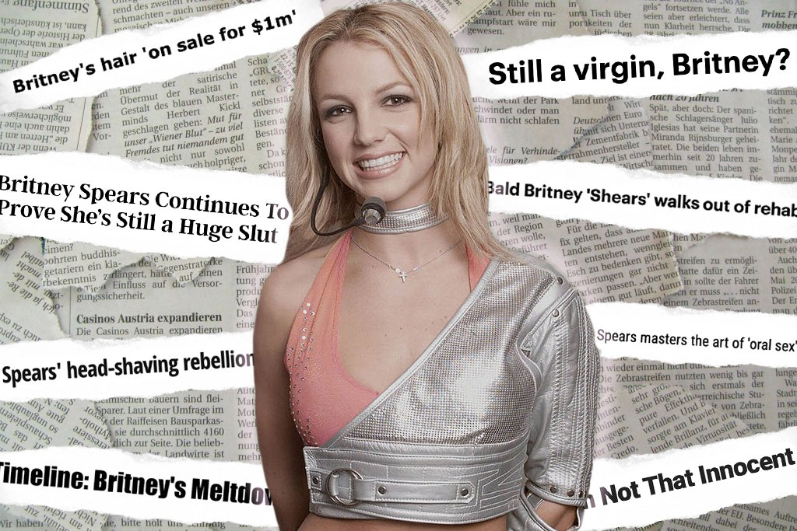

Our featured Wildcard Documentary is Framing Britney Spears because of the conversations it
has started around mental health, the entertainment industry, and ownership of one's person. You can watch
the documentary film on Hulu. We rank it 4.5 stars out of 5.

Ranked Reviews for Framing Britney Spears
We ranked these reviews for Framing Britney Spears and linked their sources
The hit documentary arrives on Sky and Now TV, and explores the feeding frenzy that has
surrounded the pop star since she was 10 years old...
Britney Spears was a symbol for her entire public life. And, even in her seclusion, we can’t stop
seeing her as something more, and less, than simply a person...
Framing Britney Spears" skips the more obvious title, "Free Britney," the name of a fan-driven
movement that's ultimately the primary focus of this latest "The New York Times Presents" documentary.
Although Spears' career, and the media's hounding of her, provide the backbone of the FX/Hulu
presentation, there's no escaping a tabloid tone despite the newspaper's pedigree...